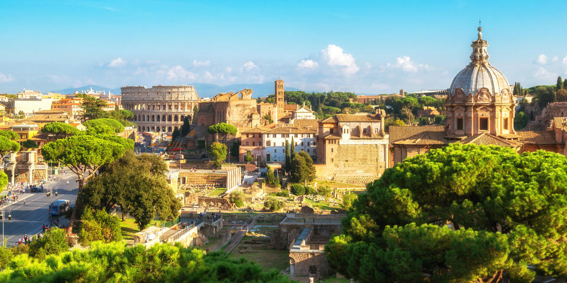

Bienvenido a Roma
El Coliseo o Anfiteatro Flavio (en latín Colosseum, en italiano Colosseo) es un anfiteatro de la época del Imperio romano, construido en el siglo I. Está ubicado en el este del Foro Romano, y fue el más grande de los que se construyeron en el Imperio romano.
Conocido originalmente como Anfiteatro Flavio (Amphitheatrum Flavium) pasa a ser llamado Coliseo (Colosseum) porque a su lado había una gran estatua, el Coloso de Nerón, un monumento dedicado al emperador Nerón que posteriormente sufrió transformaciones y llegó a desaparecer.
El Coliseo se usó durante casi 500 años, celebrándose en él los últimos juegos de la historia en el siglo VI, bastante más tarde de la tradicional fecha de la caída del Imperio romano de Occidente en 476 d. C.
Los bizantinos también lo utilizaron durante el siglo VI. Además de las peleas de gladiadores, muchos otros espectáculos públicos tenían lugar aquí, como naumaquias, caza de animales.
Roma, la capital de Italia, es una extensa ciudad cosmopolita que tiene a la vista casi 3,000 años de arte, arquitectura y cultura de influencia mundial. Las ruinas antiguas como las del Foro y el Coliseo evocan el poder del antiguo Imperio Romano.
La ciudad del Vaticano, sede central de la Iglesia católica romana, cuenta con la Basílica de San Pedro y los Museos del Vaticano, que albergan obras maestras como los frescos de la Capilla Sixtina de Miguel Ángel.